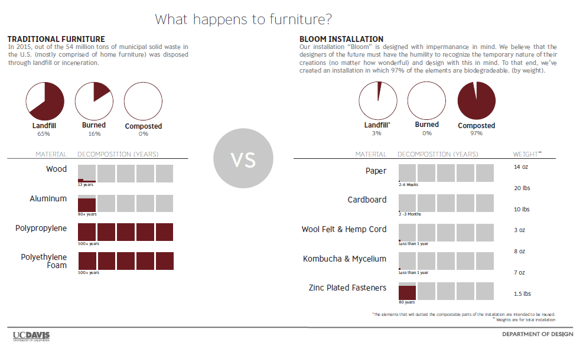
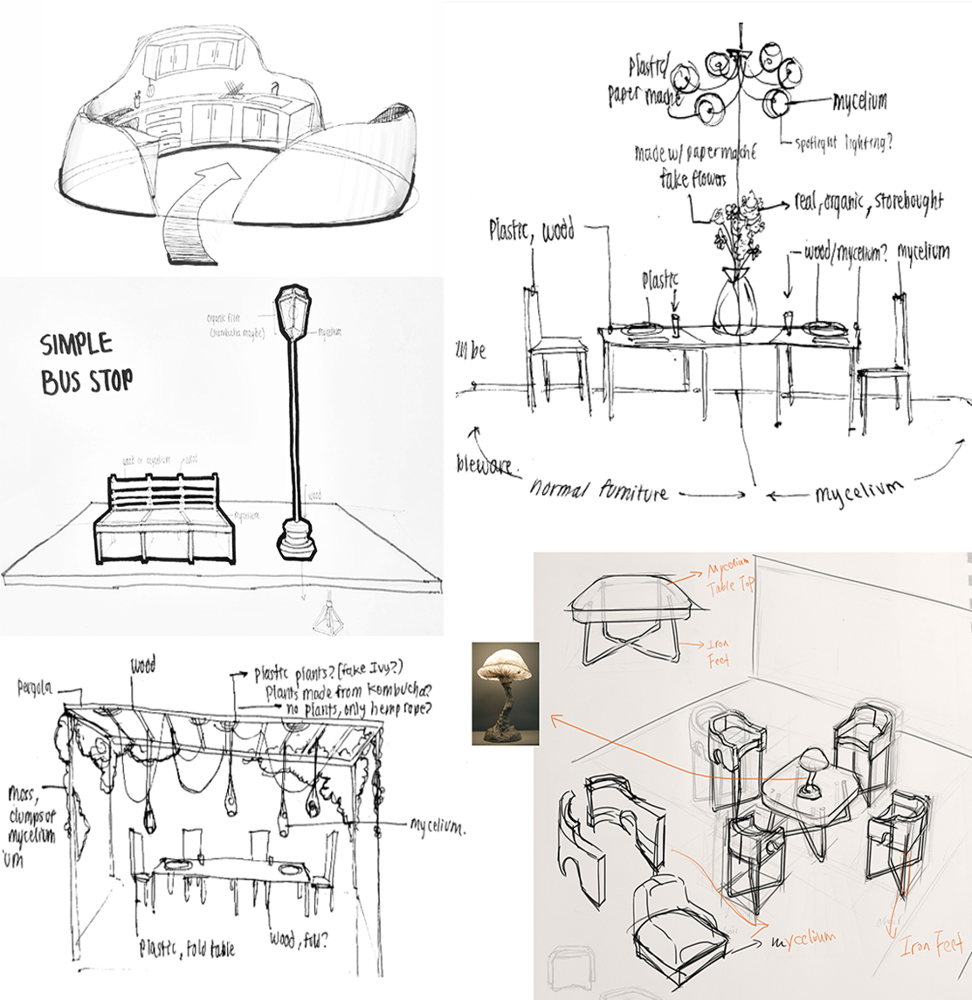
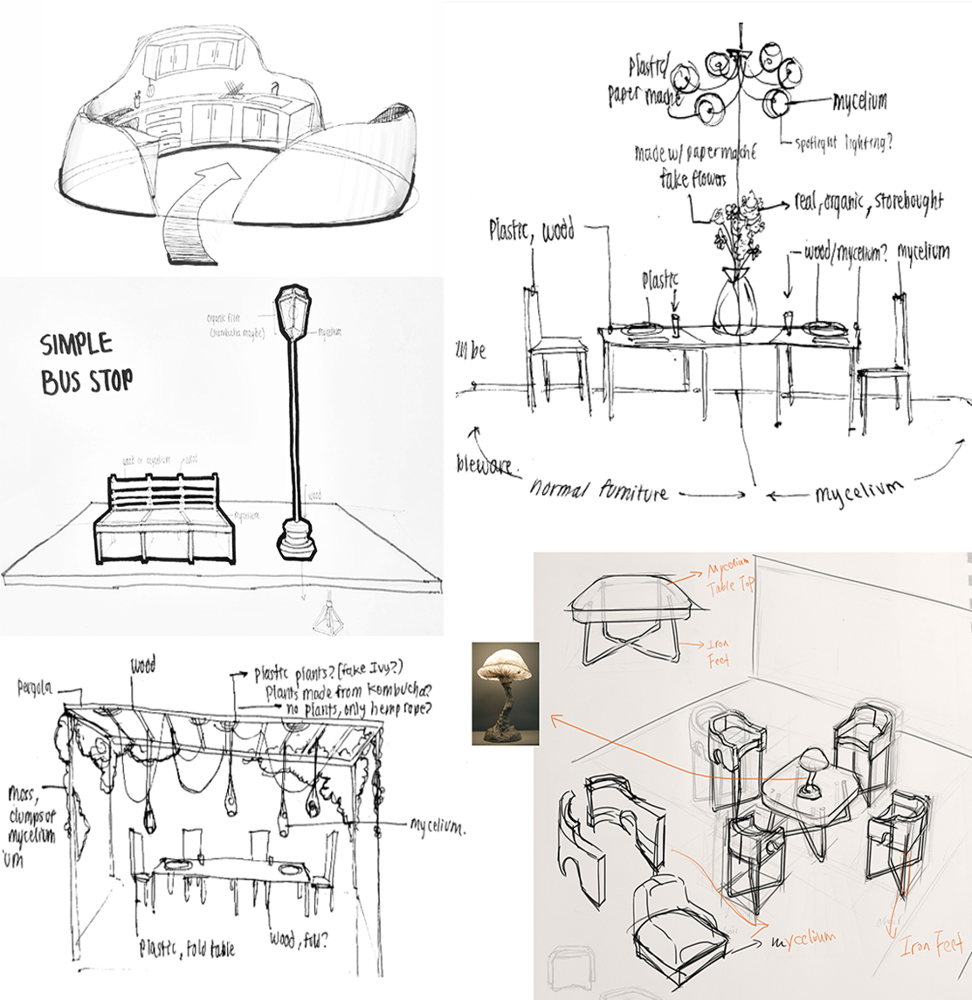
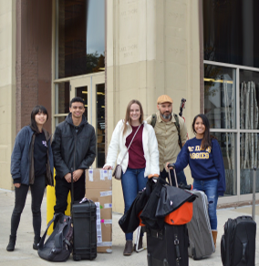
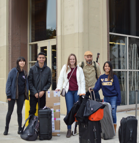
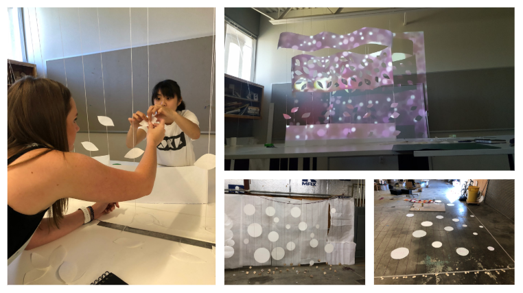
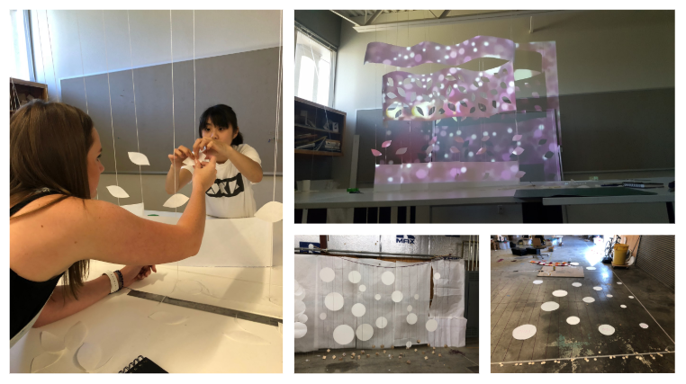
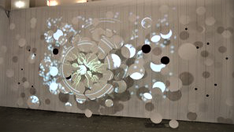
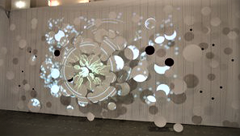

Sustainable Lounge Space
Sustainable Lounge Space
For the SOFA CONNECT exhibition in Chicago, it was required to create a setting with a seating, lighting, and environmental aspect. The projection was under the environmental aspect of the 97% immediately biodegradable exhibition, called Project Bloom.
As 1 of the 6 design projects chosen through a national competition organized by critically acclaimed SOFA Chicago (Sculptural Objects Functional Art and Design), BLOOM is a build environment realized at the 2018 SOFA Chicago art fair dedicated to three-dimensional art and design. BLOOM is a modern lounge space with interactive projection. The installation is 97% biodegradable, and consists of cardboard, wool felt, paper, hemp, mycelium brick (the vegetative part of the fungus), and kombucha leather. The remaining 3% are the nuts, bolts, and electronics, which can easily be reused while the other components are composted, making it an extremely sustainable piece.
I worked on BLOOM as the projections lead, along with 3 other core members and many supporting teammates. BLOOM was also presented at the UC Davis Undergraduate Research Conference as an Aggie Sustainability Project in 2019. You can check out BLOOM in action on Youtube and below. You can navigate to the projection section and associated code by clicking here
Bloom is intended to initiate conversations with the audience regarding biodegradability, and our social responsibilities to the environment as consumers and designers.
For the seating element, we were required to come up with a structurally sound and comfortable structure made from biodegradable materials that hundreds of people could sit on over a span of 4 days.
We first sketched out numerous variations of seating designs based on different biodegradable materials and our inspiration from moodboards. Prototyping involved experimenting with materials like bamboo, mycelium (a mushroom and sawdust mixture), and cardboard. We tested the stability, durability, and compatibility of the materials of our overall exhibit goals. After prototyping with mycelium, we learned that it wasn’t a material that could effectively replace conventional furniture-building materials such as wood or metal in small quantities. Bamboo was stiff and would require buying many canes of it.
Ultimately, we used cardboard which was cheap, abundant, easy to work with, and biodegrades in roughly 2-3 months. We ensured the stability of the seating by inserting cardboard cross panels inside each seat held together with aluminum nuts, bolts, and washers, which made up relatively very little of our exhibit. We experimented with rice and cornstarch glues, but after multiple prototypes realized the drying time and seating stability would not work for our presentation. The cardboard used to make the seating is completely upcycled, made from old bicycle boxes found outside of the Bike Barn on the UC Davis campus. It was important to the concept of the project not to buy brand new cardboard, but to reuse what we could find, and promote a reusable and sustainable future. We also incorporated biodegradable wool felt from Germany on the tops of the seats, and laser cut lines into the parts that folded over the edge of the seat.
We developed a modular design that consisted of three units, for a total of 9 seating areas, along with a matching table that contained the projector and webcam sensor. Overall, the furniture was lightweight, stable, and easy to assemble and disassemble. Each seating module folded down flat to make it easy to pack into a luggage. The compatibility and biodegradability of the cardboard furniture were the main strong points of this part of the project.
 


 

For the lighting portion of the exhibition, we aimed to create a biodegradable lighting element. We incorporated the use of unique and renewable materials and showcased the lighting in the center table.
Mycelium is able to be a sustainable alternative to plastic, brick, and even cloth. Mycelium is the vegetative root filaments of mushrooms, which when mixed with a medium like sawdust, creates a firm structure that can be molded into practically anything. In our exhibit, the structures we created took about 2 weeks of preparation time to grow and set, and used a mixture of mycelium and sawdust. After setting, the mycelium was molded into a cylindrical container shape and baked it in the oven for about 12 hours so it could fully harden.
Along with the mycelium, kombucha leather was also showcased in our exhibition as both a unique biomaterial as well as a visually appealing element. Scoby (Symbiotic Culture Of Bacteria and Yeast), or bacterial cellulose, is a culture of bacteria and yeast that is used to create kombucha. When scoby is grown at a consistently warm temperature it can be dyed then dried to make kombucha leather. Bacterial cellulose is the most abundant natural biopolymer on the planet. While the most traditional usage of cellulose is plant based, use of bacterial cellulose has gained attention in recent years. The unique properties of kombucha leather have led to development of BC products such as artificial skin, wound dressing, and scaffolds.
The kombucha in the exhibition is set in the mycelium container and takes the shape of a flower, so the leafy assemblage of kombucha is easily viewable to the audience. A few LEDs are placed inside of the kombucha leather flowers to show off it’s translucent traits. The arrangement of the mycelium and kombucha lighting element drew in audience members and initiated conversations involving unique and eco-friendly materials, and openined a dialogue of future sustainable materials that could be implemented in the furniture design field. Ultimately the mycelium we wanted to exhibit was presented as a container set on the center table, which can easily be seen and felt by the audience.
My main role of the project is to create a projection that is associated with the biodegradable materials that were used in the creation of the rest of the exhibit. I produced a visually appealing projection that is denotative of the growth of our materials, as well as the research of motion interaction of the audience with the projection.
Generative design is the manipulation of code and computer algorithms to create these organic designs. I was in charge of coding a projection for our exhibition that generates a new and unique visual each time the program refreshes, which mimics the randomness found in nature and represents the growth of the natural materials used in the exhibition.
I used a programming language called Processing and created generative root designs to simulate the growth of the natural materials we used in our furniture. The projection coded for the exhibition appears as a circular root system called a “bloom” growing out from the center of a 3-dimensional facade a distance away from the projector, and branches off the further away it gets from the center. Every time the bloom grows on screen, it generates a new branch layout with a new color, and all the colors and branch layouts are randomized.

The projection is linked to a webcam that detects motion. Surrounding the bloom are moving dots associated with movement, with opaque centers that reference the appearance of cells, as well as to repeat the form of the circle cutouts of our 3-dimensional screen. The cells move responding to the motion of the audience captured by the webcam, which symbolizes an interaction and causation of user's actions (their movements) to the effects on the environment and of natural resources (the installation). The placement of the webcam is meant to draw the audience’s attention more to the facade, lighting, and furniture. The facade was created using lasercut paper circles of 3 sizes secured to 2 layers of hemp strings and a back wall using biodegradable linen tape. The hemp strings were dangled from a hanging structure the width of the exhibit, and secured to wood lasercut circles that were adhered to the ground using melted beeswax.
 

 
